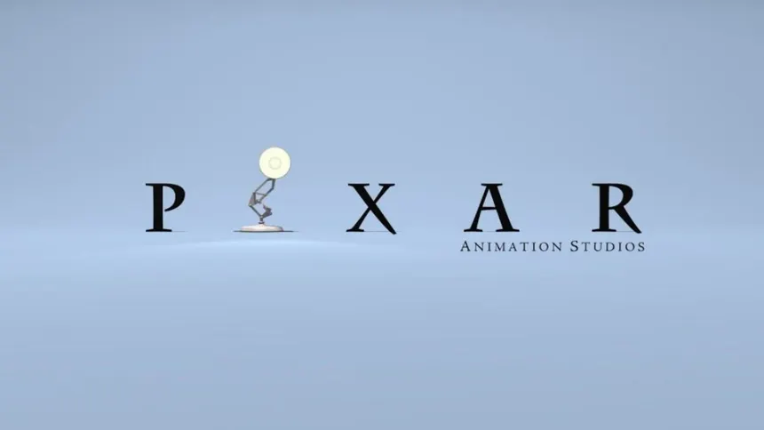
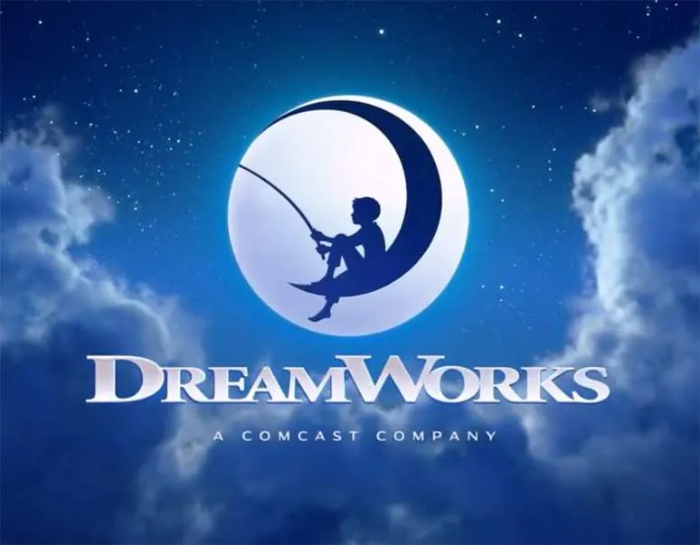
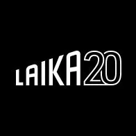

Estúdios Pioneiros
Walt Disney Animation Studios
O estúdio que definiu a animação como arte e indústria, pioneiro em longas-metragens e inovações tecnológicas desde "Branca de Neve" até "Frozen"

Warner Bros. Animation
Lar dos Looney Tunes, este estúdio é famoso por seu humor anárquico, personagens icônicos e uma abordagem mais cômica e caótica da animação.

Studio Ghibli
Cofundado por Hayao Miyazaki, é aclamado mundialmente por suas narrativas profundas, arte deslumbrante e filmes que se tornaram clássicos atemporais.

Pixar Animation Studios
Revolucionou a indústria com "Toy Story", o primeiro longa em CGI. É conhecida por suas narrativas emocionantes, rigor técnico e personagens inesquecíveis.
DreamWorks Animation
Grande concorrente da Disney/Pixar, marcou a animação com seu humor satírico em franquias de sucesso como "Shrek", "Madagascar" e "Como Treinar o Seu Dragão".
Laika
Mestres do stop-motion moderno, o estúdio é aclamado por suas animações visualmente deslumbrantes e temáticas sombrias, como "Coraline" e "Kubo e as Cordas Mágicas".
